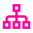
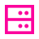

From discovery to handoff, one engineering team designs and builds the environment behind your desktops.From discovery to handoff, one engineering team designs and builds the environment behind your desktops.
We align the design with your users, applications, operating requirements, performance, capacity and availability.
What your team gets back
One team that knows your setup
From desktops to infrastructure, one dedicated team takes care of the whole picture.
Fewer surprises, fewer disruptions
We spot issues early, fix them before they grow and make sure changes work before they go live.
A team that remembers
Your systems, your history and your documentation stay in good hands. No starting from scratch or relying on one person.
Infrastructure services
Six modules cover discovery, design, deployment, migration, validation and handoff. Each project is scoped from the ones you need.

Architecture and
capacity planning
- Translate workloads, concurrent demand, application requirements and availability objectives into an infrastructure design.
- Size resources and plan workload placement for growth, maintenance and agreed failure scenarios.
- Document design assumptions and dependencies.

Supporting
infrastructure
- Design and integrate compute, storage, virtualization and networking for virtual desktops.
- Plan resource allocation, storage performance, connectivity, name resolution, load balancing and identity dependencies.
- Define customer-managed components and provider-managed services.
Desktop and
application delivery
- Configure provisioning, pools or host pools where applicable, images, profiles, policies, agents and access settings.
- Coordinate application and endpoint integration with the required user workflows and management processes.
Refresh, upgrades
and migrations
- Review compatibility and sequence infrastructure and desktop-platform dependencies.
- Plan and execute pilot deployment, migration and production transition.
- Establish testing, maintenance windows and rollback or recovery arrangements.

Availability
and recovery
- Identify critical dependencies, redundancy and recovery arrangements.
- Plan desktop-service behavior during maintenance or disruption against agreed availability and recovery requirements.
- Include recovery procedures and validation of selected scenarios where scoped.

Validation and
operational handoff
- Validate desktop access, logon, reconnect, application availability, profiles, policies and relevant performance measures against agreed criteria.
- Coordinate business-workflow acceptance with application owners.
- Provide documentation and knowledge transfer for the operating team.
How the environment fits together
Endpoints and access
- Thin clients
- PCs and laptops
- Access clients
- Sign-in
- Peripherals
Layer 1
Desktop and application delivery
- Omnissa Horizon
- Citrix
- Azure Virtual Desktop
- Windows 365
- Images and profiles
- Policies
Layer 2
Supporting infrastructure
- Compute
- Storage
- Virtualization
- Networking
- DNS
- Load balancing
- Identity
Layer 3
From day one
to day-to-day
No complicated handovers. No guessing who’s doing what. Just good people keeping your technology in good shape.
01First, let’s talk.
We get to know your business, understand what you need and agree on who’s doing what. No surprises later.
02We’ll get to know the ropes.
We get familiar with your systems, document the important stuff and make sure nothing gets lost in translation.
03Leave the day-to-day to us.
Monitoring, maintenance, support. We’ve got the everyday covered, so you can get on with yours.
04Good is good. Better is better.
We don’t just keep things ticking. We check in, spot opportunities and find ways to make things work even harder for you.


 A dedicated engineering team
A dedicated engineering team


 What you’re building, expanding or changing
What you’re building, expanding or changing